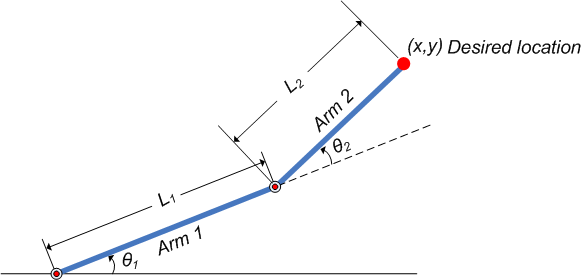
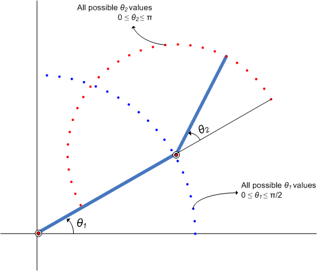
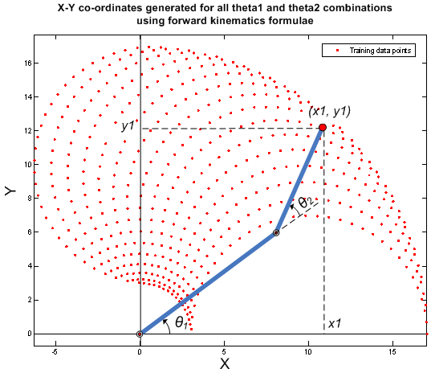
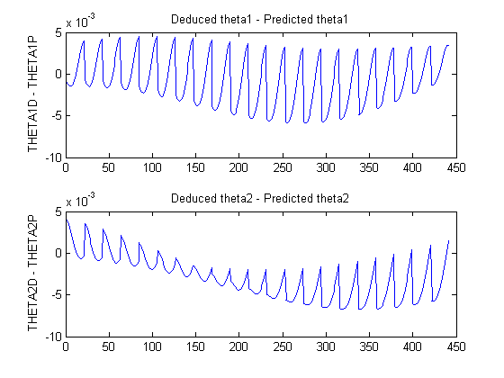
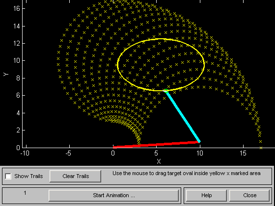

Modeling Inverse Kinematics in a Robotic Arm
This demo illustrates using a fuzzy system to model the inverse kinematics in a two-joint robotic arm.
Contents
What Is Inverse Kinematics?
Kinematics is the science of motion. In a two-joint robotic arm, given the angles of the joints, the kinematics equations give the location of the tip of the arm. Inverse kinematics refers to the reverse process. Given a desired location for the tip of the robotic arm, what should the angles of the joints be so as to locate the tip of the arm at the desired location. There is usually more than one solution and can at times be a difficult problem to solve.
This is a typical problem in robotics that needs to be solved to control a robotic arm to perform tasks it is designated to do. In a 2-dimensional input space, with a two-joint robotic arm and given the desired co-ordinate, the problem reduces to finding the two angles involved. The first angle is between the first arm and the ground (or whatever it is attached to). The second angle is between the first arm and the second arm.

Figure 1: Illustration showing the two-joint robotic arm with the two angles, theta1 and theta2
Why Use Fuzzy Logic?
For simple structures like the two-joint robotic arm, it is possible to mathematically deduce the angles at the joints given the desired location of the tip of the arm. However with more complex structures (eg: n-joint robotic arms operating in a 3-dimensional input space) deducing a mathematical solution for the inverse kinematics may prove challenging.
Using fuzzy logic, we can construct a Fuzzy Inference System that deduces the inverse kinematics if the forward kinematics of the problem is known, hence sidestepping the need to develop an analytical solution. Also, the fuzzy solution is easily understandable and does not require special background knowledge to comprehend and evaluate it.
In the following section, a broad outline for developing such a solution is described, and later, the detailed steps are elaborated.
Overview of Fuzzy Solution
Since the forward kinematics formulae for the two-joint robotic arm are known, x and y co-ordinates of the tip of the arm are deduced for the entire range of angles of rotation of the two joints. The co-ordinates and the angles are saved to be used as training data to train ANFIS (Adaptive Neuro-Fuzzy Inference System) network.
During training the ANFIS network learns to map the co-ordinates (x,y) to the angles (theta1, theta2). The trained ANFIS network is then used as a part of a larger control system to control the robotic arm. Knowing the desired location of the robotic arm, the control system uses the trained ANFIS network to deduce the angular positions of the joints and applies force to the joints of the robotic arm accordingly to move it to the desired location.
What Is ANFIS?
ANFIS stands for Adaptive Neuro-Fuzzy Inference System. It is a hybrid neuro-fuzzy technique that brings learning capabilities of neural networks to fuzzy inference systems. The learning algorithm tunes the membership functions of a Sugeno-type Fuzzy Inference System using the training input-output data.
In this case, the input-output data refers to the "coordinates-angles" dataset. The coordinates act as input to the ANFIS and the angles act as the output. The learning algorithm "teaches" the ANFIS to map the co-ordinates to the angles through a process called training. At the end of training, the trained ANFIS network would have learned the input-output map and be ready to be deployed into the larger control system solution.
Data Generation
Let theta1 be the angle between the first arm and the ground. Let theta2 be the angle between the second arm and the first arm (Refer to Figure 1 for illustration). Let the length of the first arm be l1 and that of the second arm be l2.
Let us assume that the first joint has limited freedom to rotate and it can rotate between 0 and 90 degrees. Similarly, assume that the second joint has limited freedom to rotate and can rotate between 0 and 180 degrees. (This assumption takes away the need to handle some special cases which will confuse the discourse). Hence, 0<=theta1<=pi/2 and 0<=theta2<=pi.

Figure 2: Illustration showing all possible theta1 and theta2 values.
Now, for every combination of theta1 and theta2 values the x and y coordinates are deduced using forward kinematics formulae.
The following code snippet shows how data is generated for all combination of theta1 and theta2 values and saved into a matrix to be used as training data. The reason for saving the data in two matrices is explained in the following section.
l1 = 10; % length of first arm l2 = 7; % length of second arm theta1 = 0:0.1:pi/2; % all possible theta1 values theta2 = 0:0.1:pi; % all possible theta2 values [THETA1, THETA2] = meshgrid(theta1, theta2); % generate a grid of theta1 and theta2 values X = l1 * cos(THETA1) + l2 * cos(THETA1 + THETA2); % compute x coordinates Y = l1 * sin(THETA1) + l2 * sin(THETA1 + THETA2); % compute y coordinates data1 = [X(:) Y(:) THETA1(:)]; % create x-y-theta1 dataset data2 = [X(:) Y(:) THETA2(:)]; % create x-y-theta2 dataset
Click here for unvectorized code
The following plot shows all the X-Y data points generated by cycling through different combinations of theta1 and theta2 and deducing x and y co-ordinates for each. The plot can be generated by using the code-snippet shown below. The plot is illustrated further for easier understanding.
plot(X(:), Y(:), 'r.');
axis equal;
xlabel('X')
ylabel('Y')
title('X-Y co-ordinates generated for all theta1 and theta2 combinations using forward kinematics formulae')
Figure 3: X-Y co-ordinates generated for all theta1 and theta2 combinations using forward kinematics formulae
Building ANFIS Networks
One approach to building an ANFIS solution for this problem, is to build two ANFIS networks, one to predict theta1 and the other to predict theta2.
In order for the ANFIS networks to be able to predict the angles they have to be trained with sample input-output data. The first ANFIS network will be trained with X and Y coordinates as input and corresponding theta1 values as output. The matrix data1 contains the x-y-theta1 dataset required to train the first ANFIS network. Therefore data1 will be used as the dataset to train the first ANFIS network.
Similarly, the second ANFIS network will be trained with X and Y coordinates as input and corresponding theta2 values as output. The matrix data2 contains the x-y-theta2 dataset required to train the second ANFIS network. Therefore data2 will be used as the dataset to train the second ANFIS network.
anfis is the function that is used to train an ANFIS network. There are several syntaxes to the function. If called with the following syntax, anfis automatically creates a Sugeno-type FIS and trains it using the training data passed to the function.
The following code may take a couple of minutes to run:
fprintf('-->%s\n','Start training first ANFIS network. It may take one minute depending on your computer system.') anfis1 = anfis(data1, 7, 150, [0,0,0,0]); % train first ANFIS network fprintf('-->%s\n','Start training second ANFIS network. It may take one minute depending on your computer system.') anfis2 = anfis(data2, 6, 150, [0,0,0,0]); % train second ANFIS network
-->Start training first ANFIS network. It may take one minute depending on your computer system. -->Start training second ANFIS network. It may take one minute depending on your computer system.
The first parameter to anfis is the training data, the second parameter is the number of membership functions used to characterize each input and output, the third parameter is the number of training epochs and the last parameter is the options to display progress during training. The values for number of epochs and the number of membership functions have been arrived at after a fair amount of experimentation with different values.
The toolbox comes with GUI's that helps build and experiment with ANFIS networks.
anfis1 and anfis2 represent the two trained ANFIS networks that will be deployed in the larger control system.
Once the training is complete, the two ANFIS networks would have learned to approximate the angles (theta1, theta2) as a function of the coordinates (x, y). One advantage of using the fuzzy approach is that the ANFIS network would now approximate the angles for coordinates that are similar but not exactly the same as it was trained with. For example, the trained ANFIS networks are now capable of approximating the angles for coordinates that lie between two points that were included in the training dataset. This will allow the final controller to move the arm smoothly in the input space.
We now have two trained ANFIS networks which are ready to be deployed into the larger system that will utilize these networks to control the robotic arms.
Validating the ANFIS Networks
Having trained the networks, an important follow up step is to validate the networks to determine how well the ANFIS networks would perform inside the larger control system.
Since this demo problem deals with a two-joint robotic arm whose inverse kinematics formulae can be derived, it is possible to test the answers that the ANFIS networks produce with the answers from the derived formulae.
Let's assume that it is important for the ANFIS networks to have low errors within the operating range 0<x<2 and 8<y<10.
x = 0:0.1:2; % x coordinates for validation y = 8:0.1:10; % y coordinates for validation
The theta1 and theta2 values are deduced mathematically from the x and y coordinates using inverse kinematics formulae.
[X, Y] = meshgrid(x,y); c2 = (X.^2 + Y.^2 - l1^2 - l2^2)/(2*l1*l2); s2 = sqrt(1 - c2.^2); THETA2D = atan2(s2, c2); % theta2 is deduced k1 = l1 + l2.*c2; k2 = l2*s2; THETA1D = atan2(Y, X) - atan2(k2, k1); % theta1 is deduced
Click here for unvectorized code
THETA1D and THETA2D are the variables that hold the values of theta1 and theta2 deduced using the inverse kinematics formulae.
theta1 and theta2 values predicted by the trained anfis networks are obtained by using the command evalfis which evaluates a FIS for the given inputs.
Here, evalfis is used to find out the FIS outputs for the same x-y values used earlier in the inverse kinematics formulae.
XY = [X(:) Y(:)]; THETA1P = evalfis(XY, anfis1); % theta1 predicted by anfis1 THETA2P = evalfis(XY, anfis2); % theta2 predicted by anfis2
Now, we can see how close the FIS outputs are with respect to the deduced values.
theta1diff = THETA1D(:) - THETA1P; theta2diff = THETA2D(:) - THETA2P; subplot(2,1,1); plot(theta1diff); ylabel('THETA1D - THETA1P') title('Deduced theta1 - Predicted theta1') subplot(2,1,2); plot(theta2diff); ylabel('THETA2D - THETA2P') title('Deduced theta2 - Predicted theta2')
The errors are in the 1e-3 range which is a fairly good number for the application it is being used in. However this may not be acceptable for another application, in which case the parameters to the anfis function may be tweaked until an acceptable solution is arrived at. Also, other techniques like input selection and alternate ways to model the problem may be explored.
Building a Solution Around the Trained ANFIS Networks
Now given a specific task, such as robots picking up an object in an assembly line, the larger control system will use the trained ANFIS networks as a reference, much like a lookup table, to determine what the angles of the arms must be, given a desired location for the tip of the arm. Knowing the desired angles and the current angles of the joints, the system will apply force appropriately on the joints of the arms to move them towards the desired location.
The invkine command launches a GUI that demonstrates how the two trained ANFIS networks perform when asked to trace an ellipse.

Figure 4: Demo GUI for Inverse Kinematics Modeling.
The two ANFIS networks used in the demo have been pre-trained and are deployed into a larger system that controls the tip of the two-joint robot arm to trace an ellipse in the input space.
The ellipse to be traced can be moved around. Move the ellipse to a slightly different location and observe how the system responds by moving the tip of the robotic arm from its current location to the closest point on the new location of the ellipse. Also observe that the system responds smoothly as long as the ellipse to be traced lies within the 'x' marked spots which represent the data grid that was used to train the networks. Once the ellipse is moved outside the range of data it was trained with, the ANFIS networks respond unpredictably. This emphasizes the importance of having relevant and representative data for training. Data must be generated based on the expected range of operation to avoid such unpredictability and instability issues.
Conclusion
This demo illustrated using ANFIS to solve an inverse kinematics problem. Fuzzy logic has also found numerous other applications in other areas of technology like non-linear control, automatic control, signal processing, system identification, pattern recognition, time series prediction, data mining, financial applications etc.,
Explore other demos and the documentation for more insight into fuzzy logic and its applications.
Glossary
ANFIS - Adaptive Neuro-Fuzzy Inference System. a technique for automatically tuning Sugeno-type inference systems based on training data.
membership functions - a function that specifies the degree to which a given input belongs to a set or is related to a concept.
input space - it is a term used to define the range of all possible values
FIS - Fuzzy Inference System. The overall name for a system that uses fuzzy reasoning to map an input space to an output space.
epochs - 1 epoch of training represents one complete presentation of all the samples/datapoints/rows of the training dataset to the FIS. The inputs of each sample are presented and the FIS outputs are computed which are compared with the desired outputs to compute the error between the two. The parameters of the membership functions are then tuned to reduce the error between the desired output and the actual FIS output.